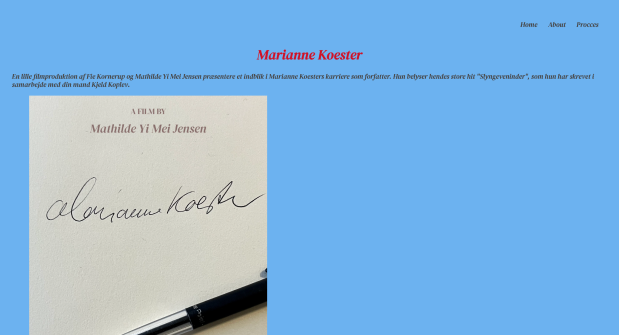
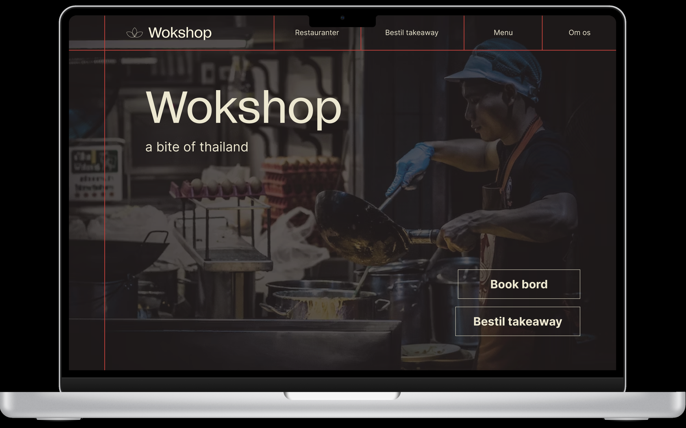
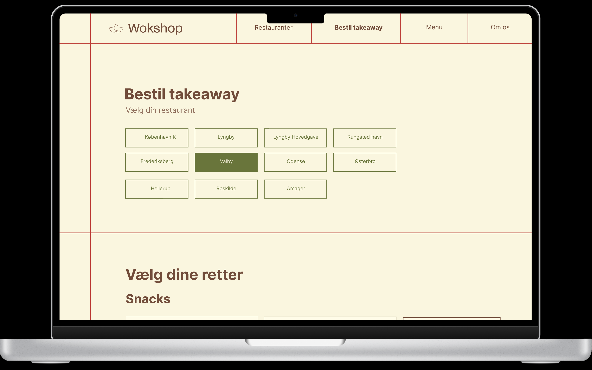

Temaets første opgave var en videosite, som skulle indholde et interview af en person med en passion. Her lærte vi om hvordan en vigtigheden i præproduktion, optagelser, deling af materiale og postproduktionen. Ydermere blev vi også introduceret til implementering af video lokalt i html-filen samt indlejring fra YouTube.
Efterfølgende blev vi sat i en gruppe, hvor vi skulle bruge resten af temaet til at lave et redesign af en selvvalgt virksomhed. Her blev vi introduceret til SCRUM og Trelloboard, samt en team kontakt som skal hjælpe med at organisere gruppearbejdet.
Vi gjorde brug af vores læring fra tema 01, tema 02 og tema 03 i form af storyboard, klipning, de grundlæggende design principper, indhold og kommunikation samt hele research og ide processen til design af prototype (lofi og hifi) samt kodningen. Derudover blev vi også introduceret til GitHub og Netlify som specielt kodningen i gruppen meget lettere.
Yderligere lærte vi også om BERT testen, hvor vi bl.a. benyttede os af denne test-metode og 5-sec-test på både vores valgte virksomheds nuværende hjemmeside og vores redesign. Efterfølgende sammenlignede vi resultaterne. Derudover gjorde vi også brug af tænkehøjt-test og lighthousetest for at kunne optimere vores UI bedst muligt. Vi sluttede temaet af ved at lærer samt benytte af Pecha Kucha præsentationsteknikken.